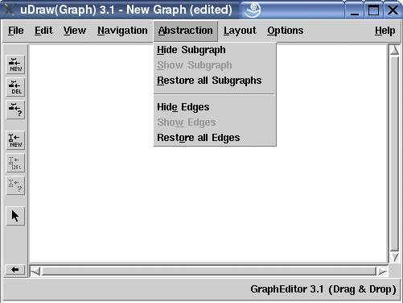
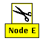
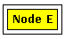

Abstraction Menu
The "Abstraction" menu contains operations for hiding particular parts of a graph visualization. Two kinds of abstractions are available: subgraph abstractions and edge abstractions.
Subgraph abstraction is used to hide the subgraph(s) of the currently selected node(s). The advantage of using this abstraction is to get a clearer graph layout where uninteresting or confusing subgraphs do not appear. The operation is only available when nodes are selected where the subgraph is not already hidden. After using this function, all children (and their children, and so on) of the selected node(s) will be removed from the graph visualization. This recursive hiding process stops as soon as a child is reached that has at least one parent which is not hidden at the same time. So, this operation will hide only the children that can be exclusively reached by starting at the selected node(s). Nodes with hidden subgraphs get an alternative visualization. This alternative visualization can be specified with the node attributes _CGO and _CIMAGE in the term representation of a graph. In the default case, an icon with a pair of scissors is used to emphasize that subgraph abstraction has been applied to a node:
 Symbol for applied subgraph abstraction
Edge abstraction is used to temporarily hide the incoming and outgoing edges (from the parents and to the children) of the currently selected node(s). The advantage of using this abstraction is to get a clearer graph layout where uninteresting or confusing edges do not appear. The operation is only available when nodes are selected where the edges are not already hidden. After using this function, all edges of the selected node(s) will be removed from the graph visualization. Nodes with hidden edges get an alternative visualization by drawing a rectangular frame around the node:
 Symbol for applied edge abstraction
Note: Menu operations can also be invoked without the mouse by using keyboard commands.
Subgraph Abstraction
-
Hide Subgraph
This operation is used to hide the subgraph(s) of the currently selected node(s). To undo a subgraph abstraction, use menu "Show Subgraph" or "Restore all Subgraphs", see below. This will unhide the hidden subgraph(s) again. After using this abstraction, the corresponding subgraph will be removed from the visualization without taking advance of the space that becomes free. If you want to utilize the free space in the layout after using subgraph abstractions, choose menu Layout/Improve Spacing. -
Show Subgraph
To undo previously applied subgraph abstractions for the currently selected node(s). The operation is only available when nodes are selected where the subgraph is actually hidden. The subgraph is inserted by using incremental graph layout. If the layout has changed by using menus Layout/Improve All, Layout/Improve Spacing or after fine-tuning, the graph nodes may not be at the same position as before, because other nodes may have occupied the space needed to show the subgraph again. -
Restore all Subgraphs
This operation undoes previously applied subgraph abstractions for all nodes in the graph in one step. See menu operation "Show Subgraph" above for details about undoing subgraph abstractions.
Edge Abstraction
-
Hide Edges
This operation is used to hide the incoming and outgoing edges (from the parents and to the children) of the currently selected node(s). To undo an edge abstraction, select menu "Show Edges" or "Restore all Edges", see below. This will unhide the hidden edge(s) again. After using this abstraction, the corresponding edges will be removed from the visualization. They can be redrawn at any time by using the two menu operations below without calculating a new graph layout. -
Show Edges
To undo previously applied edge abstractions for the currently selected node(s). The operation is only available when nodes are selected where the edges are actually hidden. Unlike subgraph abstractions, showing the edges will never start the layout algorithm. So after using this operation, the graph nodes will always be at the same position as before. -
Restore all Edges
This operation undoes previously applied edge abstractions for all nodes in the graph in one step. See menu operation "Show Edges" above for details about undoing edge abstractions.